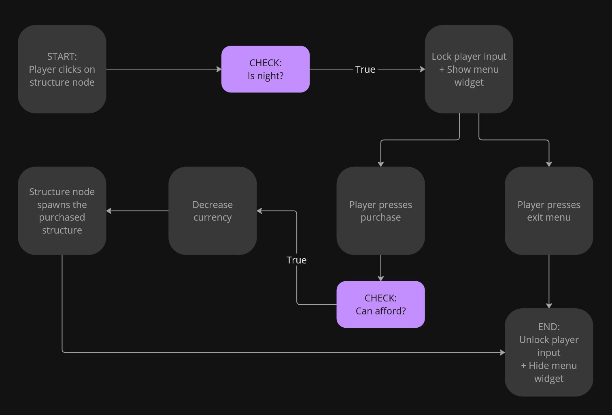
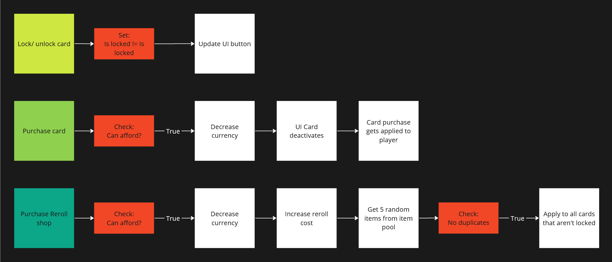

My Role(s)
UI/UX Designer, Technical & System Designer
Tools
Unreal Engine 5, Figma, Miro, Github
Time
2 weeks + 4 weeks
Team size
8 people team; 4 designers & 4 programmers
Vampower is a survival-like tower defense game with minor roguelike elements were you must protect your Vampire overlord from hordes of enemies. Tailor your playstyle by selecting 1 out of 10 hearts to serve and choose between 3 classes, with different stats and starting weapon.
Responsibilities as UI/UX Designer
Design and implement all the game's UI
The overall user experience
Responsibilities as Technical & System Designer
Design the game systems
Implement gameplay features; enemy spawning & structure building
Decide on a structure for managing the game data, using data tables so it's easily accessable and editable
Making and editing most of the game data
I was a central part of the team and worked closely with both designers and programmers to build and implement all the game systems.
Play the game!
Itch.io
TECHNICAL & SYSTEM DESIGN
Pre-production phase
2 weeks exploring 3 game concepts, developing a playable prototype for each one. First half of the week went to concepting and roughly planning out the different concepts. The rest was split up into 2 days of development time per prototype.
Health system

I created a versatile health system in blueprints that was reused for all of the prototypes, saving on development time to work on other features.
To test the health system I made a target dummy with the health system properly implemented with a health bar to visualize the current health.
To deal damage I made an attack actor component that can be applied to any actor and a turret that shoots projectiles.
Vampower Prototype
The prototype focused on testing the core mechanics of defending a central point from waves of enemies by building structures.
The prototype features:
Simple enemies that target either the player or the central point (the heart).
An enemy spawner that spawns an increasing amount of enemies per wave.
Structures, 2 different types.
Actor with the attack actor component.
Turret actor that shoots projectiles at closest enemy.
The player can interact with structures to activate them.
Day & night cycle.

Production phase
4 weeks to create the finished game.
Units
For the prototype we'd utilized inheritance for the units, since all of them would need to have health logic. It worked great for the prototype so we used it for the actual game as well.

Classes in C++ which blueprint inherits from.
The Ally and Enemy Base distinction was needed for targetting.
Unit Stat Structure
Max Health
Health Regeneration
Lifesteal
Defense
Movement Speed
Attack Damage
Attack Speed
Critical Rate
AOE Radius
Units get their stats from a data table on Begin play.
Player
The player has three classes, each class has a different set of base stats and starting weapon. The weapons have the same class types and are designed to synergize best with the same class but still work with the other classes.

Enemy Spawning (WIP)
HUD-class
For this project I tried a new approach for managing widgets, as I knew this game would have a lot of menus.
After learning some more best practices I decided to use the HUD-class.
The HUD-class creates and handles all the widgets.
I really like this approach, as it centralizes everything UI related in one place,
making it easier to manage and for others to work around.
For information other systems needed from the UI,
I created event dispatchers that the widgets triggered.
Example; when an upgrade is purchased from the shop widget that the player blueprint listens to in order to apply the changes.
Another new approach I tried for this project was to keep gameplay logic out of the widgets.
The widgets should only display given data and forward button inputs.
When button input is received the widget fires an event dispatcher so the HUD-class can handle it.
Build Structure
I began with planning out how the player would build a structure from start to finish.


First iteration
The player walk up to the resource node in order to interact with it. This was extremely tedious and time consuming.
I changed the interact input to use mouse click instead. This way the distance doesn't matter.
Bugs
1. Delayed interact after purchase
After building a structure there was a noticable delay before you could interact with another node.
After debugging I still couldn't figure it out so I ended up rewriting how the click interact works in hopes of fixing it, but the delay was still there. As it wasn't gamebreaking I had to leave it.
I ended up accidentally solving it when I was fixing a similar hover bug, but over UI weapon icons on the HUD.
Turns out it had to do with changing Input mode when exiting menus.
Previously I just set it to Input Mode Game Only whenever exiting a menu, but using Input Mode UI And Game instead just… solved it. Good to know. :)
2. Click inconsistency
There was a lot of inconsistency with clicking on the resource node. This lead to some frustration and confusion from playertesters.
The reason for this inconsistency was other objects blocking the raycast from the cursor.
When rewriting the click interact I added a object channel for Interact, which helped reduce the inconsistency.
Data structure (WIP)
Data table. Struct with variables for the UI and class reference to the structure.
Player Feedback
To improve the user experience I added more feedback to the players actions. I swap the cursor icon and added a hover effect on the resource node by changing the material.
This makes the resource nodes feel more like buttons and helps inform that the player should click on it.
The resource nodes were sometimes missed so I very subtly added animated pointing arrows ontop of the resource nodes.
The hover effects and arrows are only active during nighttime when they are interactable.

Upgrade Shop (WIP)


Shop data
Card Struct. Weapon Struct with Upgrade information for the weapons. HUD-class makes card struct out of the Weapon data table based on the current weapon level.
Random cards and scaling costs
The cost of cards needs to scale based on the amount you've purchased.
UI/UX DESIGN
Main learning points
HUD blueprint class
Use the HUD-class for creating and storing references to the widgets instead of the player or controller blueprints. This greatly helped this project's structure and improved communication within the team.
Collapse Widgets
Collapse and reuse widgets instead of continuously creating and destroying them.
RichTextBlocks & RichTextStyle
RichTextStyles helps keep text consistency and makes font adjustment easier. The setup is slower to start but the time saved later is well worth it.
My UI workflow
1. Plan & research
I outline what UI will be necessary, in what contexts, prioritizing it's importance. I study other games with similar mechanics and make user stories.
2. Layout blockout & flow
Either done on paper or in Figma. The blockout helps showcase my vision and allows me to get feedback early on.
3. Implementation & functionality
I recreating the blockout in engine, focusing on making it functional. The blockout helps inform the structure of the widgets and what content I'll need.
SHOP MENU
Feature brief
The shop needed to display 5 upgrade cards. The shop has a randomness to what cards get displayed. There should be a reroll feature to reroll the shops selection. A feature to lock/ unlock individual cards so the player has the option to not reroll locked cards. The player should also be able to see their current stats and purchased upgrades in order to make more informed choices.
Original blockout
For the upgrade cards I had a lot of references to go from. The main inspirations were Brotato and Soulstone Survivor for their layouts.
The difficulty I faced was figuring out the placement of player information; such as their weapon(s), stats and upgrades.
I ended up dissatisfied with what I came up with but knew I didn't have the time to fix it.
The main issues I have with it is that there's too much packed information that takes up a third of the screen.
It feels overwhelming and doesn’t look clean.


Reimagined blockout
Taken time away from the project, I tried tackling the main issues I had with the original layout.
To solve how crowded it felt I moved information into tool tips, only keeping the icons for the weapon and upgrades.
This gives a lot more space and allows me to make the container shorter. The icons could potentially be made even smaller if needed.
I also moved the active heart up to the top of the screen, as it was oddly placed with the upgrades prior.
Card animation
For the purchase animation, I made the card spin by decreasing the widgets render transform x scale and the y shear simultaneously.
Simple but effective and looks convincingly 3D!

Shop menu in game
BUILD MENU
Feature brief
The build menu should display all the structures and information about them; such as name, description, cost. The players currency balance should also be present.

Blockout
The game has 3 structure types; offence, defence and support.
Each structure type has 3 structures, making a total of 9 structures.
With this in mind I designed a menu with three tabs corresponding to the structure types and three structure cards.
The structure cards content update to fit the active tab.
Hovering over the card will show a window with more details about the structure.
Build menu ingame
Feedback for the Build menu
1. Hold to purchase feature
Gives the player a chance to cancel purchase.
Confused players at first but they quickly adapted without outside prompting.
When asked if they’d preferred not having the feature, most said no and that they like it.
Feedback on shortening the hold time requirement so it went faster.
The feature could also be a settings option, so the player gets the final say.
2. Tab buttons
Playtesters frequently missed the tab buttons.

Same design is used in the class select menu but not the same issue. Difference is it has a Header text right under the buttons.
I’d be curious to see if adding that to the builds menu would help alleviate the problem. Otherwise I’d work on clarifying the tab buttons visual language to more clearly communicate to the player that they are in fact buttons.
3. Currency text color

The red color for the currency text gave playtesters the impression that an item they could afford wasn't purchasable. From a UX stand point red is used to communicate an error or lack of resources in this context.
Knowing this I made a visual distinction between elements when an element can’t be afforded by lowering the opacity.

Unfortunately, this distinction isn't there when all the elements can be afforded, leading to the assumption that you can’t purchase it. I should have done a better job communicating this visually or picked a more conventional color for better UX.
Selection Menu
Feature brief
At the start of the game the player wants to pick their playstyle by selecting this runs modifiers and their class. The menu should display all the available choices with relevant information so the player can make informed decisions.

First iteration
The select menu does not have a blockout, but was instead made in engine by taking standards I’d made for the earlier menus.
Main Menu separation
For the final version of the game the main menu was separated out from the selection menu and put in its own level.
This made map selection and restarting a level a lot simpler.
The layout was also changed to be horizontal instead of vertical, inspired by the menus in Thronefall. I setup a quick scene to use as backdrop and added a title.
Final version
In total I made 10 different Heart types, but to fit them all I had to update the design of the Heart select cards.
I simplified the cards design by moving the description information into tooltips.
The Quick play button was added to speedup getting into game, useful when debugging.
It picks all the default options, skipping the selection process getting you into the game with one click.
Ironically the best feature I made, by skipping the other stuff I made.
Healthbar & damage numbers

Cutscene
I've experience doing a visual novel style game in Unreal Engine so I repurposed some of that code to work for a cutscene.
The cutscene widget takes two arrays of the same length, one for images (texture2D) and one for string.
The widget goes through the arrays, changing the image and displaying the string with a typing effect.
When the full string is displayed there's a short delay before automatically continuing to the next element.
The player can click to continue the story quicker.
To handle this input I made an invisible button that covers the entire screen.